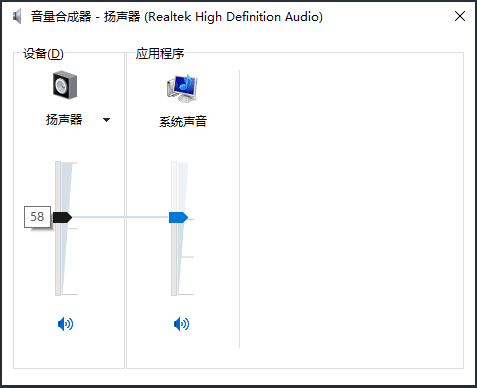
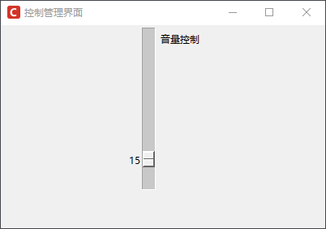
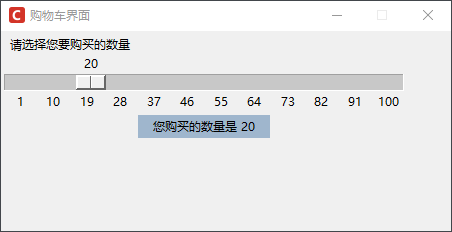

Tkinter Scale控件详解
Scale 控件，即滑块控件或标尺控件，该控件可以创建一个类似于标尺式的滑动条对象，用户通过操作它可以直接设置相应的数值（刻度值)。
Scale 控件同样有许多应用场景，并且在我们日常工作中也会经常用到，比如电脑上调节音量的滑动条（数值范围 0-100），如下图所示：
Scale 控件常用的基本属性如下所示：
Scale 常用方法有如下四个，见下表所示：
下面看一组简单的实例应用：创建一个 Scale 控件
下面看一个稍微复杂点的应用示例，代码如下：
Scale 控件同样有许多应用场景，并且在我们日常工作中也会经常用到，比如电脑上调节音量的滑动条（数值范围 0-100），如下图所示：

图1：音量控件面板
图1：音量控件面板
Scale 控件常用的基本属性如下所示：
| 参数 | 说明 |
|---|---|
| activebackground | 指定当鼠标在上方飘过的时候滑块的背景颜色 |
| bigincrement |
1. 设置“大”增长量 2. 该选项设置增长量的大小 3. 默认值是 0，增长量为范围的 1/10 |
| borderwidth |
1. 指定边框宽度 2. 默认值是 2 |
| command |
1. 指定一个函数，每当滑块发生改变的时候都会自动调用该函数 2. 该函数有一个唯一的参数，就是最新的滑块位置 3. 如果滑块快速地移动，函数可能无法获得每一个位置，但一定会获得滑块停下时的最终位置 |
| digits |
1. 设置最多显示多少位数字 2. 补充注释：例如设置 from 选项为 0，to 选项为 20，digits 选项设置为 5，那么滑块的范围就是在 0.000 ~ 20.000 直接滑动 3. 默认值是 0（不开启） |
| font |
1. 指定滑块左侧的 Label 和刻度的文字字体 2. 默认值由系统指定 |
| from_ |
1. 设置滑块最顶（左）端的位置 2. 默认值是 0 |
| highlightcolor |
1. 指定当 Scale 获得焦点的时候高亮边框的颜色 2. 默认值由系统指定 |
| label |
1. 你可以在垂直的 Scale 组件的顶端右侧（水平的话是左端上方）显示一个文本标签 2. 默认值是不显示标签 |
| length | 1. Scale 组件的长度，默认值是 100 像素 |
| orient |
1. 设置 Scale 控件是水平放置（HORIZONTAL）还是垂直放置（VERTICAL） 2. 默认值是 VERTICAL（垂直放置） |
| repeatdelay |
1. 该选项指定鼠标左键点击滚动条凹槽的响应时间 2. 默认值是 300（毫秒） |
| repeatinterval |
1. 该选项指定鼠标左键紧按滚动条凹槽时的响应间隔 2. 默认值是 100（毫秒） |
| resolution |
1. 指定 Scale 组件的分辨率（每点击一下移动的步长） 示例： 比如 resolution 选项设置为 0.1 的话，那么每点击一下鼠标就是在 0.0 ~ 20.0 之间以 0.1 的步长移动 2. 该参数的默认值是 1 |
| showvalue |
1. 设置是否显示滑块旁边的数字 2. 默认值为 True |
| sliderlength |
1. 设置滑块的长度 2. 默认值是 30 像素 |
| state |
1. 默认情况下 Scale 组件支持鼠标事件和键盘事件，可以通过设置该选项为 DISABLED 来禁用此功能 2. 默认值是 NORMAL |
| takefocus |
1. 指定使用 Tab 键是否可以将焦点移动到该 Scale 组件上 2. 默认是开启的，可以通过将该选项设置为 False 避免焦点落在此组件上 |
| tickinterval |
1. 设置显示的刻度，如果设置一个值，那么就会按照该值的倍数显示刻度 2. 默认值是不显示刻度 |
| to |
1. 设置滑块最底（右）端的位置 2. 默认值是 100 |
| troughcolor |
1. 设置凹槽的颜色 2. 默认值由系统指定 |
| variable |
1. 指定一个与 Scale 组件相关联的 Tkinter 变量，该变量存放滑块最新的位置 2. 当滑块移动的时候，该变量的值也会发生相应的变化 |
| width |
1. 指定 Scale 组件的宽度 2. 默认值是 15 像素 |
Scale 常用方法有如下四个，见下表所示：
| 方法 | 说明 |
|---|---|
| coords(value=None) |
1. 获得当前滑块位置相对于 Scale 控件左上角位置的相对坐标， 2. 如果设置了 value 值，则返回当滑块位于该位置时与左上角的相对坐标 |
| get() | 获得当前滑块的位置（即当前数值），返回值可以为整型或者浮点型 |
| identify(x, y) | 返回一个字符串表示指定位置下的 Scale 控件 |
| set(value) | 设置 Scale 控件的值，即滑块的位置，默认为初始位置 |
下面看一组简单的实例应用：创建一个 Scale 控件
from tkinter import *
# 创建主窗口
win =Tk()
win.title("控制管理界面")
win.iconbitmap('C:/Users/Administrator/Desktop/C语言中文网logo.ico')
win.geometry('400x250')
# 添加一个 Scale 控件，默认垂直方向，步长设置为 5，长度为200，滑动块的大小为 50，最后使用label参数文本
s=Scale(win, from_ =100, to =0,resolution =5,length =200,sliderlength= 20,label ='音量控制' )
s.pack()
# 设置滑块的位置
s.set(value=15)
# 显示窗口
mainloop()
程序运行结果如下：

图1：音量控制界面
图1：音量控制界面
下面看一个稍微复杂点的应用示例，代码如下：
import tkinter as tk
window = tk.Tk()
window.title("购物车界面")
window.iconbitmap('C:/Users/Administrator/Desktop/C语言中文网logo.ico')
window.geometry('450x200+450+250')
window.resizable(0,0)
# 创建一个文本标签
label = tk.Label(window, bg='#9FB6CD',width=18, text='')
label.grid(row =2)
# 创建执行函数
def select_price(value):
label.config(text='您购买的数量是 ' + value)
# 创建 Scale控件
scale = tk.Scale(window,
label='选择您要购买的数量',
from_=1,
to= 100,
orient=tk.HORIZONTAL, # 设置Scale控件平方向显示
length=400,
tickinterval=9, # 设置刻度滑动条的间隔
command=select_price) # 调用执行函数，是数值显示在 Label控件中
scale.grid(row =1)
# 显示窗口
window.mainloop()
程序运行结果如下：

图2：tkinter Scale控件示例
关注公众号「站长严长生」，在手机上阅读所有教程，随时随地都能学习。内含一款搜索神器，免费下载全网书籍和视频。

微信扫码关注公众号